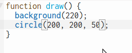

Le but de ce défi est d'explorer les formes et les couleurs de la librairie p5.js pour former des motifs, à la manière des magnifiques motifs géométriques arabes.
Si tu visites cette page, tu verras un motif apparaître.
Commencer !Le but de ce défi est d'explorer les formes et les couleurs de la librairie p5.js pour former des motifs, à la manière des magnifiques motifs géométriques arabes.
Si tu visites cette page, tu verras un motif apparaître.
Commencer !Connecte-toi à ton compte p5.js et commence un nouveau projet. Tu peux déjà le renommer pour mieux le retrouver par la suite.
RAPPEL: la fonction setup() ne s'exécute qu'une seule fois, tandis que la fonction draw() s'exécute plusieurs fois par seconde.
Premier défi: dessiner un cercle en plein millieu du canvas (dont les dimensions peuvent être 400 x 400).
Pour cela, tu auras besoin de la fonction circle()
Inspire-toi de la documentation pour coder correctement la fonction circle(). Cette fonction prend notamment 3 paramètres. Le concept de paramètre est très important en programmation! Ça nous permet de réutiliser une fonction mais en modifiant quelques éléments.
Pour la fonction circle(), les trois paramètres sont x, y et d. X et Y, ce sont les coordonnées du centre du cercle, D c'est le diamètre du cercle.
Si j'écris circle(200, 300, 50) cela veut dire que mon cercle aura comme coordonnées d'origine (200, 300). Le diamètre sera de 50.
Comment fonctionnent les coordonnées dans la librairie p5.js? Pas comme dans Scratch où le point (0, 0) se trouve au beau milieu de la scène:
En p5.js, l'origine se trouve plutôt en haut à gauche:

Essaie de programmer deux cercles supperposés, comme ceci:
En passant, pour copier facilement une ligne, tu peux mettre ton curseur sur la ligne et appuyer les touches ctrl + shift + d:
Si tu arrives à un résultat de ce genre, c'est que la couleur intérieure de ton cercle est blanche. Il te faut une couleur... transparente!
Avec le challenge En 2020, je serai..., on a vu que les couleurs pouvaient s'exprimer grâce à un code hexadécimal. Elles peuvent aussi s'exprimer grâce à un code RGBA. Ce code a 4 valeurs. Les 3 premières sont un nombre entier entre 0 et 255. La quatrième valeur est un nombre entre 0 et 1.
Voici un exemple pour la couleur bleue: rgba(0,0,255,1). Pour la couleur rouge: rgba(255,0,0,1). À ton avis, quel sera le code pour la couleur verte? (Green en anglais... pense au code rGba)
rgba(0,255,0,1)
La quatrième valeur du code RGBA te donne l'opacité de la couleur. Lorsque cette valeur est 1, la couleur est opaque. À l'inverse, lorsque la valeur est à 0, la couleur est transparente.
Comment utiliser le code RGBA dans notre programme p5.js? Avec les fonctions color() et fill() (remplir):
let c = color('rgba(0,0,0,0)');
fill(c);
circle(200, 200, 50);
Pour changer la couleur du trait de tes cercles, utilise la fonction stroke()
Maintenant que tu connais les fonctions de base, amuse-toi à ajouter d'autres formes (carrés, rectangles, lignes, triangles...) Tout est dans la documentation de la librairie p5.js!